References
- https://www.1point3acres.com/bbs/thread-1126490-1-1.html
- https://juejin.cn/post/7289020420771135549#heading-7
- https://www.yuque.com/baiyueguang-rfnbu/tr4d0i
- JS frontend Q top 100
JavaScript
首先就是各种八股文的概念以及应用例如作用域和闭包，原型链，this 的绑定规则，Promise, async/await，Event Loop等等 其次就是用JS手写一些实现, 最后就是对于Dom的操作以及应用需要熟记于心
misc Q
What are the differences between let, const, and var?
letandconstare block-scoped;constcan’t be reassigned.varis function-scoped and hoisted, which may cause bugs in closures.varis function-scoped, meaning it is available within the function where it is declared.letandconstare block-scoped, meaning they are limited to the block (e.g., inside loops or conditionals) where they are declared.letallows reassignment, butconstdoes not.- Can you explain the concept of hoisting in JavaScript?
- 你能解释一下JavaScript中的提升概念吗？
- Hoisting is the behavior in JavaScript where variable and function declarations are moved to the top of their scope before code execution. Only declarations are hoisted, not initializations, so variables declared with
letandconstare hoisted but cannot be used until initialized.
example1:
const a = [1,2,3];
const b = a;
b[0] = 'dean';
console.log(a, b);
// what is printed:
// [ 'dean', 2, 3 ] [ 'dean', 2, 3 ]or
console.log(a)
a = 2;
// what is printed:
// VM99:1 Uncaught ReferenceError: a is not defined
// at <anonymous>:1:13or
console.log(a)
var a = 1;
// what is printed
// undefinedor
console.log(b)
let b = 2;
// what is printed
// Uncaught ReferenceError: b is not defined
// at <anonymous>:1:13
What is a Promise in JavaScript?
A Promise represents the result of an asynchronous operation. It can be pending, fulfilled, or rejected, and is used with .then() or await.What is a Closure in JavaScript?
A closure is a function that remembers variables from its lexical scope, even when executed outside of that scope. It enables private data and function factories.What is the Event Loop?
- The event loop allows non-blocking async execution. It processes the call stack and executes callbacks from the message or micro task queues.
- The event loop is a mechanism in JavaScript that handles asynchronous operations. It waits for tasks to complete, processes them one by one, and then returns to idle mode. When a function is called asynchronously, it is placed in the message queue, and the event loop processes it once the main thread is idle.
What does typeof typeof 1 return?
It returns"string"becausetypeof 1is “number”, andtypeof "number"is"string".What is the output of
1 < 2 < 3and3 > 2 > 1?1 < 2 < 3is true, but3 > 2 > 1is false because it evaluates totrue > 1→1 > 1→false.(becausetrueequals to1andfalseequals to0in javascript)What is the difference between undefined and null?
undefinedmeans a variable was declared but not assigned.nullis an intentional absence of value set by the programmer.
What is the difference between call and apply and bind?
call()andapply()both invoke functions with a specified this context.call()passes arguments individually,bind()The bind() method creates a new function with a specified this value and, optionally, initial arguments that are pre - set. The new function can be called later with additional arguments.- while
apply()expects an array of arguments. - example:
// 定义 Person 对象
const Person = {
introduce: function (hobby, occupation) {
console.log(`My name is ${this.name}, I'm ${this.age} years old. I like ${hobby}, and I'm a ${occupation}.`);
}
};
// 定义 Student 对象
const Student = {
name: 'Alice',
age: 20
};
// 使用 call 方法
Person.introduce.call(Student, 'reading', 'student');
// 使用 apply 方法
Person.introduce.apply(Student, ['swimming', 'student']);
// 使用 bind 方法1
const boundFunc1 = Person.introduce.bind(Student, "running");
boundFunc1("teacher");
// 使用 bind 方法2
const boundFunc2 = Person.introduce.bind(Student, "walking", "walker");
boundFunc2();
// print:
// My name is Alice, I'm 20 years old. I like reading, and I'm a student.
// My name is Alice, I'm 20 years old. I like swimming, and I'm a student.
// My name is Alice, I'm 20 years old. I like running, and I'm a teacher.
// My name is Alice, I'm 20 years old. I like walking, and I'm a walker.
What is the purpose of
asyncandawaitin JavaScript?
JavaScript中的async和await有什么作用？asyncis used to declare a function that will return a promise.awaitis used inside anasyncfunction to wait for a promise to resolve. It makes asynchronous code look and behave like synchronous code, making it easier to read and write.What is a closure in JavaScript?
JavaScript中的闭包是什么？
A closure is a function that has access to its own scope, the outer function’s scope, and the global scope. It allows the function to remember the environment in which it was created, even after the outer function has finished executing.What is the
thiskeyword in JavaScript?
JavaScript中的this关键字是什么？thisrefers to the context in which a function is called. In global scope, it refers to the global object. Inside a method,thisrefers to the object the method belongs to. In event handlers,thisrefers to the element that triggered the event.What is the difference between
==and===in JavaScript?
JavaScript中==和===的区别是什么？==compares values with type coercion, meaning it converts the values to the same type before comparing.===compares both value and type, ensuring that they are exactly the same without type conversion.What are the different types of HTTP requests in JavaScript?
JavaScript中HTTP请求有哪些类型？
The common HTTP request types are GET, POST, PUT, DELETE, PATCH, and HEAD. GET retrieves data from the server, POST sends data to the server, PUT and PATCH update resources, DELETE removes a resource, and HEAD retrieves headers only without the body.Can you explain what a promise is in JavaScript?
你能解释一下JavaScript中的promise是什么吗？
A promise is an object that represents the eventual completion (or failure) of an asynchronous operation. It allows you to handle asynchronous results usingthenfor success andcatchfor errors. A promise can be in one of three states: pending, resolved, or rejected.// example1
new Promise(function (resolve, reject) {
var a = 0;
var b = 1;
if (b == 0) reject("Divide zero");
else resolve(a / b);
}).then(function (value) {
console.log("a / b = " + value);
}).catch(function (err) {
console.log(err);
}).finally(function () {
console.log("End");
});
// output:
// a / b = 0
// End
// example2
const promise = new Promise((resolve, reject) => {
// 异步操作
setTimeout(() => {
if (Math.random() < 0.5) {
resolve('success');
} else {
reject('error');
}
}, 1000);
});
promise.then(result => {
console.log(result);
}).catch(error => {
console.log(error);
});
// output:
// success 或者 errorWhat is a module in JavaScript?
JavaScript中的模块是什么？
A module is a piece of reusable code that can be imported into other JavaScript files. Modules help organize code into smaller, manageable parts. ES6 introduced native support for modules withimportandexportstatements.calc.js // calc.js
export function add(x, y) {
return x + y;
}main.js // main.js
import { add } from './calc.js';
console.log(add(2, 3)); // 5
What is the difference between a
function declarationand afunction expressionin JavaScript?- JavaScript中函数声明和函数表达式有什么区别？
A function declaration is defined using the
functionkeyword, and it is hoisted, meaning it can be called before its declaration.greet(); // works
function greet() {
console.log("Hello");
}
A function expression is created when a function is assigned to a variable, and it is not hoisted, meaning it can only be called after its declaration.
greet(); // ❌ Error: Cannot access 'greet' before initialization
const greet = function () {
console.log("Hello");
};
What is Event Propagation and Event Delegation and bubbling phase and capturing phase?
- 什么是事件冒泡和事件捕获？
Event Propagation和Event Delegation不是同一个东西，它们有着不同的概念和用途。以下是具体解释：
- Event Propagation（事件传播）：指的是当一个事件在DOM中的某个元素上触发时，该事件会在DOM树中按照一定的顺序进行传播的过程。它包括捕获阶段（从根节点向目标节点传播）和冒泡阶段（从目标节点向根节点传播）。例如，在一个包含多层嵌套元素的HTML结构中，当点击内层元素时，点击事件会首先在捕获阶段从外层元素向内层元素传播，然后在冒泡阶段从内层元素向外层元素传播。这个过程是浏览器默认的行为，主要是为了让不同层次的元素都有机会处理同一个事件。
Event Delegation（事件委托）：是一种利用事件传播机制来优化事件处理的编程技巧。它的核心思想是将多个子元素的事件处理委托给它们的共同父元素，通过在父元素上添加一个单一的事件监听器来处理所有子元素的相关事件。当子元素触发事件时，事件会冒泡到父元素，父元素可以根据事件的目标来判断是哪个子元素触发了事件，并执行相应的处理逻辑。例如，在一个包含多个列表项的无序列表中，可以在列表的父元素
<ul>上添加一个点击事件监听器，来处理所有列表项<li>的点击事件，而不是为每个列表项都单独添加点击事件监听器。总的来说，Event Propagation是事件在DOM树中传播的机制，是浏览器自动进行的；而Event Delegation是一种基于事件传播机制的编程技术，是开发者为了优化代码和提高性能而采用的方法，通过利用事件传播来减少事件监听器的数量，从而提高页面的性能和可维护性。
- Event bubbling is when an event starts from the innermost element and bubbles up to the outer elements.
- Event capturing is the opposite, where the event starts from the outermost element and moves inward.
- By default, events bubble, but you can control this with event listeners.
<html lang="en">
<head>
<meta charset="UTF - 8">
</head>
<body>
<div id="outer">
<div id="inner">Click me</div>
</div>
<script>
const outerDiv = document.getElementById('outer');
const innerDiv = document.getElementById('inner');
outerDiv.addEventListener('click', function () {
console.log('Outer div clicked');
});
innerDiv.addEventListener('click', function () {
console.log('Inner div clicked');
});
</script>
</body>
</html>When you click on the inner div, the event will first be handled by the inner div’s click event listener, and then it will bubble up to the outer div, triggering its click event listener as well. So, the console will first show “Inner div clicked” and then “Outer div clicked”.
What is AJAX in JavaScript?
JavaScript中的AJAX是什么？
AJAX (Asynchronous JavaScript and XML) is a technique for making asynchronous requests to the server without refreshing the page. It allows data to be retrieved in the background and dynamically update the webpage.What is the difference between synchronous and asynchronous code in JavaScript?
JavaScript中同步代码和异步代码有什么区别？
Synchronous code runs line by line, blocking further execution until the current task is complete. Asynchronous code runs independently, allowing other operations to continue while waiting for tasks like API requests or timers.What are closures used for in JavaScript?
JavaScript中的闭包有什么用途？
Closures allow functions to retain access to variables from their outer scope, even after the outer function has finished executing. They are used for data encapsulation, creating private variables, and handling asynchronous callbacks.var add = (function () {
var counter = 0;
return function () {return counter += 1;}
})();
add();
add();
add();
// 计数器 counter 为 3Can you explain
bind(),call(), andapply()in JavaScript?
你能解释一下JavaScript中的bind()、call()和apply()吗？bind()creates a new function that, when called, has a specifiedthisvalue and initial arguments.call()andapply()are used to invoke a function with a specifiedthisvalue, butcall()takes arguments individually, whileapply()takes an array of arguments.What is a callback function in JavaScript?
JavaScript中的回调函数是什么？
A callback function is a function passed as an argument to another function, which is then executed at a later time when the operation is complete. It is commonly used in asynchronous operations like handling events or API responses.What is the difference between
localStorageandsessionStorage?localStorage和sessionStorage的区别是什么？localStoragestores data persistently until it is manually cleared by the user.sessionStoragestores data for the duration of the page session, meaning it is cleared when the page is closed.sessionStorage.setItem('username', 'JohnDoe');
sessionStorage.setItem('userData', JSON.stringify({ age: 30, email: 'johndoe@example.com' }));
const username = sessionStorage.getItem('username');
const userData = JSON.parse(sessionStorage.getItem('userData'));
console.log(username);
console.log(userData);
sessionStorage.removeItem('username');
sessionStorage.clear();What is the difference between a shallow copy and a deep copy?
浅拷贝和深拷贝的区别是什么？
A shallow copy copies only the top-level properties of an object. If there are nested objects, their references are copied. A deep copy recursively copies all properties, including nested objects, creating independent copies of them.what is it result?
(function(){ |
var a = b = 3;等价于b = 3; // 没有 var/let/const，隐式赋值，全局变量（非严格模式）
var a = b; // 用 var 声明 a，a 是函数作用域的局部变量
Why? 因为JavaScript 解释器会：
先执行右边的表达式
b = 3
因为b没有通过var、let或const声明，所以在非严格模式下它会自动创建一个全局变量b，并赋值为3。然后把这个
b的值赋给a，并通过var把a声明为局部变量。- Label
B0:呢? That’s just a label, unused here. It doesn’t affect the behavior — just ignored unless used with a loop or break. - 🚫 Strict Mode Would Break It: If you use “use strict”, b = 3 without a var, let, or const will throw a ReferenceError.
- 在 JavaScript 中，
typeof undefined的结果是'undefined'，而typeof null的结果是'object'。所以typeof undefined == typeof null这个表达式的结果是false, 这是因为在 JavaScript 早期设计中存在一个历史遗留问题，null被错误地设计成返回'object'类型 ，尽管从语义上它代表 “空值” ，但这种类型判定一直延续至今。
- What is the difference between
window.onloadandDOMContentLoaded?window.onloadtriggers when all elements of the page, including images and scripts, have finished loading. It waits for all resources to load.DOMContentLoadedtriggers when the HTML has been completely loaded and parsed, without waiting for images or other external resources. It is generally faster thanwindow.onload.
Automatic semicolon insertion(ASI)
Let’s analyze the fun2 function and determine what it returns.
In JavaScript, automatic semicolon insertion (ASI) is a mechanism that inserts semicolons at the end of statements when they are missing. The return statement in JavaScript is a special case where ASI can have a significant impact.
In the provided fun2 function:function fun2()
{
return
{
bar: "hello"
};
}
console.log(fun2());
// output:
// undefined
The return statement is written on a line by itself. According to the rules of automatic semicolon insertion, JavaScript will insert a semicolon right after the return keyword. So, the code is effectively treated as:function fun2() {
return;
{
bar: "hello";
}
}
The return statement without any value immediately terminates the function and returns undefined. The object literal { bar: "hello" } is never considered as part of the return value because of the inserted semicolon.
To correctly return the object, you should write the return statement and the object literal on the same line or use parentheses to group them, like this:function fun2() {
return {
bar: "hello"
};
}
console.log(fun2());
// output:
// { bar: 'hello' }
In this case, the function will return an object with a property bar having the value "hello".
So, the original fun2 function returns undefined.
自动分号插入（ASI）是 JavaScript 中的一个机制，它会在某些特定情况下自动插入分号，有时可能会导致意外的结果。下面为你列举一些其他涉及 ASI 的例子：
1. return 语句后续代码被忽略
除了你给出的例子，下面这种情况也会因为 ASI 导致函数提前返回 undefined。function calculate() {
return
1 + 2;
}
console.log(calculate());
按照 ASI 规则，JavaScript 会在 return 后自动插入分号，实际代码就相当于：function calculate() {
return;
1 + 2;
}
所以函数 calculate 会返回 undefined，而 1 + 2 这个表达式不会被当作返回值。
2. break、continue 语句
当 break 或 continue 语句单独成行时，ASI 会产生作用。for (let i = 0; i < 5; i++) {
if (i === 2)
break
console.log(i);
}
这里 ASI 会在 break 后插入分号，代码等同于：for (let i = 0; i < 5; i++) {
if (i === 2) {
break;
}
console.log(i);
}
如果不注意 ASI，可能会错误地认为后续代码也是 break 语句的一部分。
3. throw 语句
throw 语句也会受 ASI 影响。function checkNumber(num) {
if (typeof num!== 'number')
throw
new Error('输入必须是数字');
}
由于 ASI，实际代码变成：function checkNumber(num) {
if (typeof num!== 'number') {
throw;
new Error('输入必须是数字');
}
}
这会导致抛出一个没有错误对象的异常，后续的 new Error('输入必须是数字') 不会被当作抛出的内容，代码会报错。正确的写法应该是 throw new Error('输入必须是数字');。
4. 独立的表达式语句
在某些情况下，独立的表达式语句也会因 ASI 产生意外。let x = 1
[x, y] = [2, 3]
ASI 会在 let x = 1 后插入分号，代码变成：let x = 1;
[x, y] = [2, 3];
如果没有意识到 ASI，可能会以为这是一个连续的赋值操作，但实际上这是两个独立的语句，而且在没有声明 y 的情况下执行解构赋值会报错。
为了避免 ASI 带来的潜在问题，建议在编写代码时显式地添加分号，或者遵循一些代码风格指南来正确处理语句的分隔。
Prototype
- What is the role of the
prototypein JavaScript?
JavaScript中prototype的作用是什么？
Theprototypeis an object that all JavaScript functions and objects inherit from. It allows properties and methods to be shared across instances of objects created from the same constructor function. Modifying the prototype affects all instances of that constructor.
在JavaScript里，prototype是一项核心特性，主要用于实现继承与共享属性和方法。下面为你详细介绍它的作用：
实现继承
JavaScript是一种基于原型的语言，prototype能让对象继承其他对象的属性和方法。这意味着一个对象可以继承另一个对象的属性和方法，而无需复制所有的代码。// 定义一个构造函数
function Animal(name) {
this.name = name;
}
// 在Animal的原型上添加方法
Animal.prototype.speak = function () {
console.log(this.name + '发出声音');
};
// 创建一个新的对象实例
const cat = new Animal('猫咪');
cat.speak(); // 输出: 猫咪发出声音
在上述代码中，Animal是一个构造函数，Animal.prototype.speak为其原型添加了一个方法。当创建cat对象时，它继承了Animal原型上的speak方法。
共享属性和方法
所有基于某个构造函数创建的对象实例，都可以共享该构造函数原型上的属性和方法。这有助于节省内存，因为相同的属性和方法只需在原型上定义一次，而不用在每个对象实例中重复创建。function Car() {}
// 在Car的原型上添加一个属性
Car.prototype.wheels = 4;
// 创建两个Car的实例
const car1 = new Car();
const car2 = new Car();
console.log(car1.wheels); // 输出: 4
console.log(car2.wheels); // 输出: 4
这里，wheels属性被定义在Car的原型上，car1和car2这两个实例都能访问该属性。
动态修改对象行为
你可以在运行时通过修改原型来动态改变对象的行为。当修改原型上的属性或方法时，所有基于该原型的对象实例都会受到影响。function Person() {}
Person.prototype.greet = function () {
console.log('你好');
};
const person1 = new Person();
person1.greet(); // 输出: 你好
// 修改原型上的greet方法
Person.prototype.greet = function () {
console.log('哈喽');
};
person1.greet(); // 输出: 哈喽
上述代码先为Person原型定义了greet方法，之后对该方法进行修改，person1实例调用的greet方法也随之改变。
原型链
JavaScript对象通过原型链来查找属性和方法。当访问一个对象的属性或方法时，JavaScript首先会在该对象本身查找，如果找不到，就会沿着原型链向上查找，直到找到该属性或方法，或者到达原型链的末尾（即Object.prototype）。function Dog() {}
Dog.prototype.bark = function () {
console.log('汪汪');
};
function Labrador() {}
// 设置Labrador的原型为Dog的一个实例
Labrador.prototype = new Dog();
const myLabrador = new Labrador();
myLabrador.bark(); // 输出: 汪汪
在这个例子中，myLabrador对象本身没有bark方法，JavaScript会沿着原型链找到Dog.prototype上的bark方法。
综上所述，prototype在JavaScript中对实现继承、共享属性和方法、动态修改对象行为以及构建原型链都起着至关重要的作用。
ES6 features
- What are the key features of ES6?
- ES6的主要特性有哪些？
- ES6 (ECMAScript 2015) introduced features like
let,const,- arrow functions,
- classes,
- template literals,
- destructuring,
- modules,
- promises,
- and enhanced object literals, which improve the readability and maintainability of JavaScript code.
Here is an introduction to template literals, destructuring, and enhanced object literals in ES6 (ECMAScript 2015):
Template Literals
Syntax and Usage
- Template literals use backticks (
) instead of single or double quotes to define strings. They allow you to embed expressions inside strings using${}syntax. This makes it easier to create strings that incorporate variables or expressions. Example for variable interpolation:
const name = 'John';
const age = 30;
const message = `My name is ${name} and I am ${age} years old.`;
console.log(message);
// output: My name is John and I am 30 years old.Multiline strings: Template literals can also span multiple lines without the need for special escape characters like
\n.const multiLine = `This is a
multi - line
string.`;
console.log(multiLine);
- Template literals use backticks (
Destructuring
Array Destructuring
- Array destructuring allows you to extract values from arrays and assign them to variables in a more concise way.
Basic example:
const numbers = [1, 2, 3];
const [a, b, c] = numbers;
console.log(a);
console.log(b);
console.log(c);Skipping elements: You can skip elements in the array by leaving empty spaces between commas.
const [first, , third] = numbers;
console.log(first);
console.log(third);
Object Destructuring
- Object destructuring lets you extract properties from objects and assign them to variables.
Basic example:
const person = {
firstName: 'Jane',
lastName: 'Doe',
age: 25
};
const { firstName, lastName, age } = person;
console.log(firstName);
console.log(lastName);
console.log(age);Renaming variables: You can rename the variables during destructuring.
const { firstName: givenName, lastName: familyName } = person;
console.log(givenName);
console.log(familyName);
Enhanced Object Literals
Property Shorthand
- If an object’s property name is the same as a variable name in the current scope, you can use a shorthand notation.
const x = 10;
const y = 20;
const point = { x, y };
console.log(point.x);
console.log(point.y);
- If an object’s property name is the same as a variable name in the current scope, you can use a shorthand notation.
Method Definition Shorthand
- You can define methods in an object without using the
functionkeyword.const calculator = {
add(a, b) {
return a + b;
},
subtract(a, b) {
return a - b;
}
};
console.log(calculator.add(3, 4));
console.log(calculator.subtract(7, 2));
- You can define methods in an object without using the
Computed Property Names
- You can use square brackets to define property names dynamically using expressions.
const propertyName = 'fullName';
const user = {
[propertyName]: 'Alice Smith'
};
console.log(user.fullName);
// output: Alice Smith
- You can use square brackets to define property names dynamically using expressions.
These features in ES6 have made JavaScript code more concise, readable, and expressive, improving the overall development experience.
What is a higher-order function in JavaScript?
什么是JavaScript中的高阶函数？
A higher-order function is a function that either takes another function as an argument, returns a function, or both. Examples include map(), filter(), and reduce() in JavaScript, which take a callback function to process elements in an array.
In JavaScript, a higher-order function is a function that meets one or both of the following criteria:
1. Accepts a function as an argument
A higher - order function can take another function as a parameter. This allows for greater flexibility and code reusability. For example, the Array.prototype.map() method is a well - known higher - order function. It takes a callback function as an argument and applies that function to each element of the array, then returns a new array with the results.
const numbers = [1, 2, 3]; |
In this example, the map method is a higher - order function, and the anonymous function function(num) { return num * num; } is passed as an argument to it.
2. Returns a function
A higher - order function can also return another function. This is useful for creating functions on - the - fly or for implementing closures. Consider the following example of a function that returns a new function:
function multiplier(factor) { |
In this code, the multiplier function is a higher - order function because it returns a new function. The returned functions (double and triple) remember the factor value from the outer function’s scope due to closures.
Higher - order functions are a powerful concept in JavaScript as they enable functional programming techniques, such as function composition, currying, and more. They can make your code more modular, maintainable, and expressive.
Minxins
1. 概念
在 JavaScript 中，Mixins（混入）是一种设计模式 ，用于在不通过传统继承方式的前提下，将多个对象或类的功能组合到一个对象中，实现代码复用。它允许开发者把一些可复用的方法和属性，“混入”到其他对象或类中，让目标对象或类获得额外功能。
2. 实现方式
使用
Object.assign()方法：这是较为常见的实现方式。Object.assign()用于将一个或多个源对象的属性复制到目标对象。例如：// 定义混入对象（包含可复用方法）
const mixin = {
sayHello() {
console.log('Hello!');
}
};
// 目标对象
const person = {
name: 'Alice'
};
// 将混入对象的属性和方法复制到目标对象
Object.assign(person, mixin);
// 此时person对象就拥有了sayHello方法
person.sayHello();基于原型链：通过修改目标类的原型，把混入对象的属性和方法添加到原型上，使该类的实例都能使用这些功能。比如：
const mixin = {
printInfo() {
console.log(`This is an object with extra functionality.`);
}
};
class MyClass {
constructor() {}
}
// 将混入对象的属性和方法添加到MyClass的原型上
Object.assign(MyClass.prototype, mixin);
const instance = new MyClass();
instance.printInfo();
3. 应用场景
- 代码复用：当多个类或对象需要相同的功能时，可将该功能提取到 Mixin 中，然后混入到需要的地方，避免重复编写代码。比如多个视图类都需要日志记录功能，就可创建日志记录 Mixin 并混入。
- 功能组合：可以将不同功能的 Mixin 组合到一个对象或类中，让其具备多种能力。像一个游戏角色类，可能需要移动、攻击、防御等功能，可分别创建对应 Mixin 并组合。
- 扩展现有对象或类：在不修改原有代码结构的情况下，为已有的对象或类添加新功能。例如为第三方库中的类添加自定义方法。
4. 优缺点
- 优点
- 提高代码复用性：减少重复代码，提升开发效率。
- 增强灵活性：可按需组合不同功能，让代码结构更灵活。
- 缺点
- 命名冲突：当多个 Mixin 存在同名方法或属性时，可能产生冲突，需注意顺序（后面混入的会覆盖前面的 ）。
- 可维护性挑战：过度使用会让代码关系复杂，难以理解和维护，要合理规划和管理 Mixin。
event delegation in js
Event delegation is a technique where you attach a single event listener to a parent element, instead of adding event listeners to individual child elements. When an event occurs, it bubbles up from the child element to the parent, where it is handled.
事件委托（Event Delegation）是 JavaScript 里的一种高效事件处理技巧，它利用事件冒泡的原理，把事件监听器添加到父元素上，而非每个子元素，这样父元素就能捕获并处理其子元素触发的事件。以下是关于事件委托的详细介绍：
原理
在 HTML 文档中，当一个元素上的事件被触发时，该事件会从事件发生的元素开始，依次向上传播到其父元素、祖父元素，直至文档根元素，这个过程被称为事件冒泡。借助事件冒泡，我们可以把事件监听器添加到父元素上，让它处理所有子元素触发的相同类型事件。
示例
假设有一个无序列表，当点击列表项时要触发相应操作，下面是使用事件委托实现的代码：
// 获取父元素 |
代码解释
- 获取父元素：通过
document.getElementById方法获取无序列表元素。 - 添加事件监听器：在父元素上添加
click事件监听器。 - 判断事件目标：在事件处理函数里，借助
event.target获取触发事件的元素，然后判断该元素是否为列表项（LI标签），如果是则执行相应操作。
优点
- 减少内存占用：无需为每个子元素都添加事件监听器，从而减少了事件监听器的数量，降低了内存消耗。
- 动态添加元素时无需重新绑定事件：当动态向父元素添加子元素时，新元素也能自动拥有事件处理能力，无需为新元素单独绑定事件监听器。
适用场景
- 列表元素操作：如上述示例中的列表项点击事件。
- 动态生成元素：在动态添加、删除元素的场景中，使用事件委托可以避免频繁绑定和解绑事件监听器。
service workers in JavaScript
服务工作线程在Web应用中的作用是什么？
Service workers are JavaScript files that run in the background, separate from the web page. They allow web apps to work offline by caching resources and enabling background sync. Service workers can intercept network requests, control cache, and enable push notifications, improving performance and user experience.
在JavaScript里，Service workers是一种在浏览器后台运行的脚本，它独立于网页，能实现很多强大的功能，提升Web应用的性能与用户体验。下面为你详细介绍：
主要特点
- 独立于网页：Service workers不依赖于特定网页，即便网页关闭，它也能在后台运行。
- 事件驱动：借助监听各种事件来发挥作用，例如fetch（网络请求）、push（推送消息）等。
- 基于Promise：Service workers的API使用Promise，这让异步操作的处理更加便捷。
主要用途
- 离线支持：Service workers可拦截网络请求，当设备离线时，从缓存中获取资源，使Web应用仍能正常工作。
- 消息推送：配合浏览器的推送API，即便应用未打开，也能给用户发送通知。
- 后台同步：当设备网络恢复时，Service workers能在后台同步数据，例如用户离线时提交的数据可在联网后自动同步。
- 性能优化：通过缓存常用资源，减少重复的网络请求，加快页面加载速度。
基本生命周期
- 注册：在网页中使用
navigator.serviceWorker.register()方法来注册Service worker。 - 安装：当Service worker首次注册或脚本文件有更新时，会触发安装事件。在安装过程中，通常会缓存一些必要的资源。
- 激活：安装完成后，Service worker进入激活阶段。此时可以进行一些清理旧缓存等操作。
- 空闲或运行：激活后，Service worker会监听各种事件，在空闲时处于等待状态，有相应事件触发时则开始运行。
简单示例代码
下面是一个简单的Service worker示例，包含注册、安装和拦截网络请求的基本操作：// 注册Service worker
if ('serviceWorker' in navigator) {
window.addEventListener('load', function () {
navigator.serviceWorker.register('/service-worker.js')
.then(function (registration) {
console.log('ServiceWorker registration successful with scope: ', registration.scope);
})
.catch(function (err) {
console.log('ServiceWorker registration failed: ', err);
});
});
}
service-worker.js文件内容:
// service-worker.js文件内容 |
上述代码中，首先在网页里注册Service worker，然后在service - worker.js文件里，install事件用于缓存必要的资源，fetch事件用于拦截网络请求，若缓存中有对应资源就返回缓存内容，否则发起网络请求。
web worker vs service worker
Web Worker 和 Service Worker 不是同一个东西，它们有不同的用途、生命周期和作用范围。下面是对比和注册方法说明：
核心区别对比
| 项目 | Web Worker | Service Worker |
|---|---|---|
| 用途 | 处理耗时计算任务，防止主线程卡顿 | 用于缓存、离线支持、拦截网络请求等 |
| 线程模型 | 背景线程，不能直接操作 DOM | 背景线程，拦截网络请求，可与浏览器缓存交互 |
| 生命周期 | 由主线程创建和销毁 | 独立于页面生命周期，后台常驻，能推送通知等 |
| 运行条件 | 页面打开时运行 | 可以在后台运行，即使页面关闭 |
| 与主线程通信 | postMessage() + 事件监听 |
同样使用 postMessage() |
| HTTPS 要求 | 不需要 | 必须在 HTTPS 或 localhost 下运行 |
Web Worker 注册示例
// main.js |
Service Worker 注册示例
// service-worker.js |
总结
| 方面 | Web Worker | Service Worker |
|---|---|---|
| 对象类型 | Worker |
ServiceWorkerContainer |
| 注册方式 | new Worker() |
navigator.serviceWorker.register() |
| DOM 操作 | ❌ 无法访问 DOM | ❌ 无法访问 DOM |
| 常用场景 | 密集计算、解码等 | 离线缓存、消息推送、网络拦截等 |
TypeScript
unknown and undefined and any
unknown is a safer alternative to any. You must check or assert the type before using it, ensuring type safety.
在 TypeScript 里，unknown、undefined 和 any 都是重要的类型，不过它们的用途和意义存在差异。下面为你详细讲解：
1. undefined
- 含义：
undefined是 TypeScript 中的一个原始类型，它代表变量已声明但未赋值，或者函数没有返回值。在 JavaScript 里，若变量声明后未初始化，其值默认就是undefined；函数未使用return语句时，返回值也是undefined。 示例：
let myVariable: undefined;
// 变量声明但未赋值
let anotherVariable;
console.log(typeof myVariable);
// 输出: undefined
console.log(typeof anotherVariable);
// 输出: undefined
function noReturnValue() {
// 没有返回值
}
const result = noReturnValue();
console.log(result);
// 输出: undefined用途：通常用于表明某个值缺失或者尚未确定，在函数参数、返回值或者对象属性里，能够用
undefined类型来明确指出该值可能不存在。
2. any
- 含义：
any是 TypeScript 里的一种特殊类型，它表示变量可以是任意类型的值。当你不清楚变量的具体类型，或者想要绕过 TypeScript 的类型检查时，就可以使用any类型。 示例：
let value: any;
value = 10;
// 可以赋值为数字
value = "hello";
// 可以赋值为字符串
value = { name: "John" };
// 可以赋值为对象
function printValue(input: any) {
console.log(input);
}
printValue(123);
// 可以传入数字
printValue("abc");
// 可以传入字符串用途：在处理一些动态内容或者与 JavaScript 代码交互时，
any类型很有用。不过，过度使用any会让 TypeScript 失去类型检查的优势，增加运行时出错的风险。
3. unknown
- 含义：
unknown同样是 TypeScript 中的特殊类型，它表示变量的类型未知。和any不同的是，unknown类型更为安全，因为在对unknown类型的值进行操作之前，必须先进行类型检查。 示例：
let unknownValue: unknown;
unknownValue = 10;
unknownValue = "hello";
// 在使用 unknown 类型的值之前需要进行类型检查
if (typeof unknownValue === "string") {
console.log(unknownValue.toUpperCase());
// 可以安全地调用字符串方法
}
function processValue(input: unknown) {
if (typeof input === "number") {
return input * 2;
}
return input;
}用途：当你不确定值的类型，但又不想放弃类型检查的安全性时，就可以使用
unknown类型。它能避免在类型不明确的情况下进行不安全的操作。
总结
undefined用于表示值的缺失或未定义状态。any绕过了 TypeScript 的类型检查，可接受任意类型的值，但会降低代码的安全性。unknown也能表示任意类型的值，不过在使用之前需要进行类型检查，从而保证代码的安全性。
tuple
如果你使用 TypeScript，它提供了内置的元组类型，能够明确指定元素的数量和类型。// TypeScript 中的元组
const personTupleTs: [string, number] = ["John", 30];
// 访问元素
console.log(personTupleTs[0]); // 输出: John
console.log(personTupleTs[1]); // 输出: 30
// 类型检查
// 以下代码会报错，因为类型不匹配
// const wrongTuple: [string, number] = [30, "John"];
TypeScript 的元组提供了静态类型检查，能在编译阶段发现类型错误，提高代码的健壮性。
React
misc Q
React Router
- A routing library for React used to manage navigation in Single Page Applications (SPAs).
- Allows you to define routes and map them to components without full page reloads.
SPAs (Single Page Applications)
- A web app that loads a single HTML page and dynamically updates content via JavaScript.
- Improves UX by avoiding full page reloads and providing faster interactions.
- in React.js we usually use React Router to implement a Single Page Application (SPA).
- SPAs rely on client-side routing to switch views without reloading the page.
- React Router provides a declarative API for defining URL routes and mapping them to components.
import { BrowserRouter as Router, Route, Routes } from 'react-router-dom';
import Home from './Home';
import About from './About';
function App() {
return (
<Router>
<Routes>
<Route path="/" element={<Home />} />
<Route path="/about" element={<About />} />
</Routes>
</Router>
);
}
- This lets you navigate between Home and About without triggering a full page refresh — which is the essence of SPA behavior.
Material UI
- A popular React UI framework implementing Google’s Material Design.
- Offers pre-built, customizable components like buttons, modals, and grids for consistent design and responsiveness.
Responsive vs Adaptive Design
- Responsive Design: Responsive design is like a chameleon. It makes your website or app adjust its layout and size in real - time to fit any screen, from a tiny phone to a huge desktop monitor.
- Adaptive Design: Adaptive design, on the other hand, is more like having different outfits for different occasions. It creates fixed layouts for specific screen sizes, so it shows the right “look” depending on whether you’re using a tablet, laptop, or something else.
How do you manage state in React application?
- Use
useState,useReducer,Context APIfor local or shared component state. - For larger apps, use state management libraries like Redux, Zustand, or Recoil.
- Prefer local state when possible, lift state up when needed, and isolate global state logically.
- Use
JSX
- JavaScript XML: A syntax extension that lets you write HTML-like code in JavaScript.
- Compiled by Babel to
React.createElement()calls; improves code readability and component structure.
What is the virtual DOM?
什么是虚拟DOM？
The virtual DOM is a lightweight copy of the actual DOM. It is a JavaScript object that mirrors the structure of the real DOM. When a change occurs in the application, the virtual DOM is updated first, then compared with the real DOM. Only the differences are applied to the real DOM, improving performance.What is a controlled vs uncontrolled component?
- In React, the difference between controlled and uncontrolled components lies in who controls the form input’s state — React or the DOM.
Controlled components: React controls the input via useState.
function ControlledInput() {
const [value, setValue] = useState('');
return (
<input value={value} onChange={e => setValue(e.target.value)} />
);
}Input state is stored in React.
- React re-renders on every input change.
- Easy to validate, transform, or manipulate input.
- Preferred in most cases.
Uncontrolled components: The DOM controls the input, React reads it only when needed.
- An uncontrolled component is a form element whose value is handled by the DOM itself, rather than React state. React doesn’t directly control the value; instead, the DOM manages the value internally. If you need to read the value of an uncontrolled component, you can use a
refto access the DOM directly. function UncontrolledInput() {
const inputRef = useRef();
const handleClick = () => {
alert(inputRef.current.value);
};
return (
<div>
<input ref={inputRef} />
<button onClick={handleClick}>Show Value</button>
</div>
);
}In React,
useRefis a hook that provides a way to access and interact with DOM elements or persist values across renders without causing a re-render when the value changes.- Unlike useState,
useRefdoes not cause the component to re-render when its value changes. It’s ideal for holding mutable values that are not needed for rendering.
- Unlike useState,
- Input state lives in the DOM.
- You access it with
ref. - Less re-rendering, better for performance-critical or simple forms.
- Harder to validate or track changes.
- An uncontrolled component is a form element whose value is handled by the DOM itself, rather than React state. React doesn’t directly control the value; instead, the DOM manages the value internally. If you need to read the value of an uncontrolled component, you can use a
What is the difference between props and state?
Props are external, read-only data passed from parent to child.
- once set by the parent component, they cannot be changed by the child component.
- Component Ownership: Props are owned and controlled by the parent component.
function Parent() {
const parentData = 'Hello, Child!';
return <Child message={parentData} />;
}
function Child(props) {
return <p>{props.message}</p>; // Using the prop passed from Parent
}
State is internal and mutable, managed within the component.
- Component Ownership: State is owned and controlled within the component where it is defined. It is local to the component.
import React, { useState } from 'react';
function Counter() {
const [count, setCount] = useState(0); // Initial state is 0
const increment = () => {
setCount(count + 1); // Modify the state
};
return (
<div>
<p>Count: {count}</p>
<button onClick={increment}>Increment</button>
</div>
);
}
Jest and React Testing Library
- Jest: JavaScript testing framework for unit, integration, and snapshot testing.
- React Testing Library: Works with Jest to test React components by interacting with the DOM like a user would.
Jest
- A JavaScript testing framework developed by Meta.
- Supports unit, integration, and snapshot testing.
- Features: test runners, mocks, assertions, code coverage out-of-the-box.
- Runs tests in Node.js, not in the browser.
test('adds 1 + 2 to equal 3', () => { |
React Testing Library (RTL)
- A library for testing React components with a focus on user behavior, not implementation details.
- Encourages testing via the DOM (e.g., buttons, text) just like a real user would.
- Pairs naturally with Jest.
import { render, screen, fireEvent } from '@testing-library/react'; |
How They Work Together
| Tool | Purpose |
|---|---|
| Jest | Test runner, assertions, mocks |
| React Testing Library | DOM rendering & interaction |
Best Practices
- Use Jest for logic-heavy functions or mocking.
- Use RTL for UI/behavior tests that reflect real user interaction.
React component lifecycle
Functional components use useEffect to simulate lifecycle phases. It runs after mount, on update (with dependencies), and supports cleanup on unmount.Initial Render → useEffect(() => {...}, []) // mount
State/Props Update → useEffect(() => {...}) // update
Unmount → useEffect cleanup function // unmount
| Hook | Class Equivalent | When It Runs |
|---|---|---|
useEffect(() => {}, []) |
componentDidMount |
Once after first render |
useEffect(() => {}) |
componentDidUpdate |
After every render |
useEffect(() => { return () => {...} }, []) |
componentWillUnmount |
On unmount (cleanup function) |
what is promising?
promising is return type, when you call rest api, it return promiseexample.jsx import React, { useEffect, useState } from 'react';
function UserInfo() {
const [user, setUser] = useState(null);
useEffect(() => {
fetch('https://api.example.com/user')
.then(res => res.json())
.then(data => setUser(data))
.catch(err => console.error('Fetch failed:', err));
}, []);
return <div>{user ? <p>{user.name}</p> : <p>Loading...</p>}</div>;
}fetch()returns a promise.then()handles the fulfilled result.catch()handles errors
Redux
How does Redux work? What are reducer/store/dispatch?
- Redux uses a global
storeto hold state. dispatch()sends actions,reducerare pure functions that return the updated state based on those actions.
- Redux uses a global
Difference between Redux and Context API?
- Context API is built into React and is ideal for simple global data like theme or auth.
- Redux is better for large-scale apps, with middleware, devtools, and structured state management.
- Mr.Max:
- The Context API is to let you share state and data across the component tree. You don’t need to pass props manually at every level. So it is for simple state management. Also, it is like one - way.
- But Redux is complex. For my application, it maintains a store. It is like a central place for all state management, so it is complex.
- 上下文 API 用于让你在组件树中共享状态和数据。你无需在每一层手动传递属性。所以它适用于简单的状态管理。而且，它类似单向的。
- 但是 Redux 很复杂。对于我的应用程序来说，它维护一个存储。它就像是所有状态管理的中心位置，所以它很复杂。
Redux is a predictable state management library for JavaScript apps, often used with React. It centralizes your app’s state in a single store, and updates it through pure functions called reducers, using actions dispatched by components.
Key Concepts
1. Store
- The single source of truth: holds the entire application state.
- Created via
createStore(reducer)orconfigureStore()(Redux Toolkit).
const store = createStore(reducer); |
2. Reducer
- A pure function: takes current
stateand anaction, and returns a new state. - It must not mutate the original state.
// Pure function that updates the state |
3. Dispatch
- The way you send an action to the store to trigger a state change via the reducer.
dispatch({ type: 'INCREMENT', payload: 1 }); |
4. Action
- A plain JavaScript object describing what happened.
- Must have a
typefield (string), optionally with apayload.
const action = { |
Redux Data Flow
Component → dispatch(action) |
In React with Redux
// reducer 定义 |
Summary
| Term | Role |
|---|---|
| Store | Holds the global state |
| Reducer | Pure function that updates the state |
| Action | Object describing the change |
| Dispatch | Sends action to reducer via store |
What’s the difference between React.memo and useMemo
React.memo caches the render output of a component, but the useMemo just caches the value of function.
1. React.memo – Component-Level Memoization
What it does:
Prevents a whole functional component from re-rendering if its props haven’t changed.Use case:
Used to wrap components that receive stable props and are expensive to render.Example:
const MyComponent = React.memo(function(props) {
return <div>{props.value}</div>;
});When to use:
To optimize re-renders of child components in large UI trees.
2. useMemo – Value-Level Memoization
What it does:
Caches the result of a calculation or expression, re-computes only when dependencies change.Use case:
Used inside a component to memoize expensive computations.Example:
const result = useMemo(() => heavyCalculation(a, b), [a, b]);
When to use:
When a computation is CPU-intensive, or returns a new object/array that could cause unnecessary re-renders.
Comparison Table
| Feature | React.memo |
useMemo |
|---|---|---|
| Scope | Component-level | Inside a component |
| Memoizes | Render output | Computed value |
| Prevents | Component re-renders | Recomputing a value |
| Common Pitfall | Overuse can harm readability | Overuse can cause stale values |
| Typical Use | Child components in large trees | Expensive calculations, referential stability |
Final Tip
- Use
React.memofor component re-render optimization. - Use
useMemofor memoizing expensive values or preventing unnecessary recalculations.
HOC-Higher Order Component
- What is a Higher Order Component (HOC)?
A Higher Order Component is a function that takes a component and returns a new component with additional features. It’s used for logic reuse like authentication or data fetching.
A Higher Order Component (HOC) is an advanced React pattern used to reuse component logic.
Definition: A HOC is a function that takes a component as input and returns a new component with added behavior or data.
Syntax
const withExtraProps = (WrappedComponent) => { |
WrappedComponent: the original component- HOC returns a new component with added props, logic, or lifecycle behavior
Example: Logging Props
function withLogger(WrappedComponent) { |
Key Characteristics
| Feature | Description |
|---|---|
| Reusability | Add common behavior (e.g., logging, auth) |
| Composition | Works like function composition |
| Props forwarding | Must pass ...props to preserve original behavior |
| Naming | Usually starts with with (e.g., withAuth) |
Not the same as Render Props or Hooks
- HOCs are more common in class components
- React Hooks are now the preferred pattern in function components
Summary
HOC =
(Component) => NewComponent
Used to share logic like authentication, logging, permissions, etc.
Error boundary
- What is an Error Boundary?
An Error Boundary is a class component that catches rendering errors in its child tree. It renders fallback UI instead of crashing the entire app.
In React, an Error Boundary is a special type of component that catches JavaScript errors anywhere in its child component tree, logs those errors, and displays a fallback UI instead of crashing the whole application.
Why Error Boundaries are Needed
In React applications, if an error occurs during rendering, in a lifecycle method, or in the constructors of the whole tree, React will unmount the entire component tree below the component where the error happened. This can lead to a poor user experience as the entire part of the application might disappear suddenly. Error boundaries act as a safety net, preventing such catastrophic failures and providing a more graceful degradation.
How Error Boundaries Work
Error boundaries are class components that implement either the componentDidCatch or the getDerivedStateFromError lifecycle methods (or both).
getDerivedStateFromError: This is a static method that is called after an error has been thrown by a descendant component. It receives the error that was thrown as an argument and should return an object to update the component’s state. Typically, you use this method to set a state variable that indicates an error has occurred, which can then be used in therendermethod to show a fallback UI.componentDidCatch: This method is called after an error has been thrown and aftergetDerivedStateFromError(if it’s implemented). It receives two arguments: the error that was thrown and aninfoobject that contains information about where the error occurred in the component tree. You can use this method to log the error to an error reporting service, for example.
Example of an Error Boundary Component
import React, { Component } from 'react'; |
Usage of Error Boundary
You can use the ErrorBoundary component to wrap other components that might throw errors. For example:import React from 'react';
import ErrorBoundary from './ErrorBoundary';
const BuggyComponent = () => {
throw new Error('Simulated error');
return <div>This will never render.</div>;
};
const App = () => {
return (
<div>
<ErrorBoundary>
<BuggyComponent />
</ErrorBoundary>
</div>
);
};
export default App;
Limitations
- Error boundaries don’t catch errors for:
- Event handlers (because event handlers don’t happen during rendering).
- Asynchronous code (e.g.,
setTimeoutorPromisecallbacks). - Server - side rendering.
- Errors thrown in the error boundary itself (rather than its children).
In summary, Error Boundaries are a powerful feature in React that help improve the stability and user experience of applications by gracefully handling errors in the component tree.
React component structure and data flow
- What is the React component structure and data flow?
React uses a top-down (unidirectional) data flow. Parent components pass data via props, and child components can lift state updates via callbacks.
In React, component structure and data flow follow a unidirectional (one-way) data flow model — meaning data moves top-down, from parent to child components.
React Component Structure
A React app is built as a tree of components:App
├── Header
├── Content
│ ├── Sidebar
│ └── Main
└── Footer
- • Each component is a JavaScript function or class that returns JSX (UI).
- • Components can be nested, reused, and composed together.
React Data Flow
Props (Parent → Child)
- • Data is passed downward via props.
- • Immutable — children cannot modify props directly.
function Parent() {
return <Child name="Alice" />;
}
function Child({ name }) {
return <p>Hello, {name}</p>;
}
State (Local to Component)
- • State is owned by the component via useState.
- • Can be lifted up to a common ancestor to share between siblings.
const [count, setCount] = useState(0);
Event Callbacks (Child → Parent)
- • To send data upward, pass a function (callback) from parent to child.
function Parent() {
const handleChange = (value) => { console.log(value); };
return <Child onChange={handleChange} />;
}
function Child({ onChange }) {
return <button onClick={() => onChange('Clicked')}>Click</button>;
}
One-Way Data Flow Summary
Parent Component |
- • Clear, predictable, and maintainable.
- • Encourages lifting state and composing small, focused components.
functional components vs. class components
在 React 里，有函数式组件（Functional Components）和类组件（Class Components）这两种创建组件的方式，下面是对它们的详细介绍：
函数式组件
函数式组件是用 JavaScript 函数创建的 React 组件。它接收 props 作为参数，然后返回一个 React 元素。从 React 16.8 引入 Hooks 之后，函数式组件的功能得到了极大的扩展，能够使用状态和生命周期方法。
import React from 'react'; |
函数式组件的特点：
- 语法简洁：代码编写更简单，易读性强。
- 无状态：在 Hooks 出现之前，它只能是无状态组件。现在可以借助 Hooks 来管理状态。
- 性能更佳：因为没有实例化过程，所以渲染速度更快。
类组件
类组件是通过 ES6 的 class 关键字创建的 React 组件，它继承自 React.Component。类组件能够拥有自己的状态和生命周期方法。
import React, { Component } from 'react'; |
类组件的特点：
- 有状态：可以使用
this.state来管理组件的状态。 - 生命周期方法：能使用
componentDidMount、componentDidUpdate等生命周期方法。 - 代码复杂：相较于函数式组件，类组件的代码结构更为复杂。
对比与选择
- 函数式组件：适用于简单的展示型组件，或者是使用 Hooks 就能满足需求的场景。
- 类组件：适用于需要复杂状态管理和生命周期方法的场景，不过在新的 React 项目中，函数式组件结合 Hooks 逐渐成为主流。
React Hooks
What are React Hooks (useState, useEffect, useMemo)?
- Hooks let function components use state and lifecycle logic.
- useState manages local state,
- useEffect handles side effects,
- useMemo caches computed values.
What is useEffect used for?
useEffect runs after render and handles side effects like API calls, subscriptions, and cleanup logic. It runs on mount, update, and unmount depending on the dependency array.
React Hooks are a feature introduced in React 16.8 that allow you to use state and other React features without writing a class. Here’s an in - depth look at three commonly used hooks: useState, useEffect, and useMemo.
| Hook | Use Case | Runs On |
|---|---|---|
| useState | Local component state | On render, updated by setter |
| useEffect | Side effects (fetch, timers, etc.) | After render |
| useMemo | Expensive calculation caching | When dependencies change |
useState
- Purpose:
useStateis used to add state to functional components. Before hooks, only class components could have state. WithuseState, you can manage local state in a functional component. Syntax:
const [state, setState] = useState(initialState);
initialStateis the initial value of the state. It can be of any data type (number, string, object, array, etc.).stateis the current value of the state.setStateis a function used to update the state. When you callsetState, React will re - render the component with the new state value.
- Example:
import React, { useState } from'react';
function Counter() {
const [count, setCount] = useState(0);
return (
<div>
<p>You clicked {count} times</p>
<button onClick={() => setCount(count + 1)}>
Click me
</button>
</div>
);
}
export default Counter;
In this example, count is the state variable initialized to 0, and setCount is used to increment the count when the button is clicked.
useEffect
- Purpose:
useEffectallows you to perform side effects in functional components. - Runs after render by default.
- Side effects: include data fetching, subscriptions, manually changing the DOM, and more.
- It combines the functionality of
componentDidMount,componentDidUpdate, andcomponentWillUnmountfrom class components. Syntax:
useEffect(() => {
// Side effect code here
// runs after component mounts or updates
return () => {
// Cleanup code here (optional)
};
}, [dependencyArray]); // optional dependency array- The first argument is a function that contains the side - effect logic.
- Dependency array controls when it re-runs (like
componentDidUpdate). The optional second argument is an array of dependencies.- If the array is empty: the effect will run only once, 仅在首次渲染后执行一次, Runs only on mount (similar to
componentDidMount). - If the array is not empty: Runs on mount and whenever count changes, If a value in the dependency array changes between renders, the effect will run again, 只有依赖项变化才会执行 (similar to
componentDidUpdate). The return function is used for cleanup (similar tocomponentWillUnmount).
- If the array is empty: the effect will run only once, 仅在首次渲染后执行一次, Runs only on mount (similar to
- Example:
import React, { useState, useEffect } from'react';
function DataFetcher() {
const [data, setData] = useState(null);
// runs after component mounts, because dependencyArray is empty
useEffect(() => {
async function fetchData() {
const response = await fetch('https://api.example.com/data');
const json = await response.json();
setData(json);
}
fetchData();
return () => {
// Cleanup code if needed, e.g., canceling a subscription
};
}, []);
return (
<div>
{data? <p>{JSON.stringify(data)}</p> : <p>Loading...</p>}
</div>
);
}
export default DataFetcher;
In this example, the useEffect hook fetches data from an API when the component mounts. The empty dependency array ensures that the effect runs only once.
useMemo
- Purpose: Memoizes expensive computations to avoid recalculating them on every render.
useMemois used for memoization. Memoization is a technique used to optimize performance by caching the result of a function call so that if the same inputs are provided again, the cached result can be returned instead of recomputing the function. Syntax:
const memoizedValue = useMemo(() => computeValue(input), [input]);
- Only recalculates when
inputchanges. - The first argument is a function that computes the value to be memoized.
- The second argument is an array of dependencies. If any value in the dependency array changes, the function will be recomputed. Otherwise, the cached value will be returned.
- Only recalculates when
- Example:
import React, { useState, useMemo } from'react';
function ExpensiveCalculation() {
const [a, setA] = useState(1);
const [b, setB] = useState(2);
const result = useMemo(() => {
console.log('Computing result...');
return a + b;
}, [a, b]);
return (
<div>
<p>Result: {result}</p>
<button onClick={() => setA(a + 1)}>Increment A</button>
<button onClick={() => setB(b + 1)}>Increment B</button>
</div>
);
}
export default ExpensiveCalculation;
In this example, the useMemo hook caches the result of a + b. The function inside useMemo will only be recomputed if either a or b changes.<button onClick={() => setA(a + 1)}>Increment A</button>
当用户点击了按钮后, a就会变成2吗?
是的，如果当前 a 的值是 1，当用户点击这个按钮后：
a + 1 就是 2，调用 setA(2)，React 会更新状态，触发组件重新渲染，此时：
- • a 变为 2
- • useMemo 中依赖了 a，所以它会重新执行一次计算逻辑
🧭 更新流程简要说明：
- 用户点击按钮
- 执行 setA(a + 1)，即 setA(2)
- React 触发重新渲染
- a 现在是 2，b 还是 2
- useMemo(() => a + b, [a, b]) 中 a 变了，重新执行，结果为 4
如果你连点两次，a 会是 3，result 变为 5。
prop drilling
- What is prop drilling? How do you avoid it?
Prop drilling is passing props through multiple intermediate components. It can be avoided using React Context API or global state libraries like Redux. drill:- n. 钻，钻机；训练，演习；粗斜纹布；条播沟；条播机；条播作物；<非正式>常规，正确步骤；尾角螺
- v. 钻孔；训练，演习；条播
你想问的可能是 “prop drilling”，即“属性透传”或“props 层层传递”，下面为你详细介绍：
定义
在 React 应用里，组件通常是嵌套的。当一个父组件需要向深层嵌套的子组件传递数据时，需要经过多个中间组件。这种将 props 从顶层组件逐层传递到下层组件的过程就叫做 prop drilling。
示例
下面是一个简单的 prop drilling 示例：import React from 'react';
// 顶层组件
const GrandParent = () => {
const data = "Hello from GrandParent";
return <Parent data={data} />;
};
// 中间组件
const Parent = ({ data }) => {
return <Child data={data} />;
};
// 深层子组件
const Child = ({ data }) => {
return <p>{data}</p>;
};
const App = () => {
return <GrandParent />;
};
export default App;
在这个例子中，GrandParent 组件有一个 data 属性，它需要把这个属性传递给 Child 组件。由于 Child 组件嵌套在 Parent 组件内部，data 属性就必须先传递给 Parent 组件，再由 Parent 组件传递给 Child 组件。Parent 组件本身并不使用 data 属性，只是起到了传递的作用。
问题
- 代码冗余：中间组件需要定义和传递大量自己并不使用的 props，这会让代码变得冗长且难以维护。例如，当应用的组件嵌套层级变深时，每个中间组件都要添加额外的 prop 定义和传递代码。
- 耦合度增加：组件之间的耦合度会提高，因为中间组件依赖于这些传递的 props，即使它们并不使用这些 props。这使得代码的可维护性和可测试性变差，修改顶层组件的 props 可能会影响到多个中间组件。
解决方案
- React Context API：Context 提供了一种在组件之间共享数据的方式，而不必显式地通过每个中间组件传递 props。
import React, { createContext, useContext } from 'react';
// 创建 Context
const DataContext = createContext();
// 顶层组件 |
// 中间组件 |
// 深层子组件 |
- 状态管理库：如 Redux、MobX 等。这些库可以在应用的不同组件之间共享状态，避免了 prop drilling 的问题。例如，在 Redux 中，组件可以直接从 store 中获取所需的数据，而不需要通过层层传递 props。
Frontend common
- 浏览器缓存机制 强缓存和协商缓存的区别？
- 本地存储方式（localStorage / sessionStorage / IndexedDB）
- 解决跨域的方式有哪些？（CORS、JSONP、代理服务器、Nginx反向代理
- 常见网络请求工具 fetch 和 axios 有什么区别？
- 如何封装统一的请求拦截器？
- 如何取消请求？
- 如何做接口的重试机制？
- 如何处理接口超时？. check 1point3acres for more.
- 安全性问题 CSRF和XSS攻击是什么？前端如何防御？
- What are the advantages of using Webpack in JavaScript projects?
- bundle JavaScript files, CSS, and other assets into one file or multiple files.
- Handling complex dependencies:
- Code compression and optimization
- reducing the number of requests,
- supports code splitting,
- and enables features like hot module replacement(HMR) for faster development.
GraphQL
What are the scalar types that come with graph ql? So in the scheme, I have defined id string, right? Then you define, do you know the other ones
like int, float, string, boolean, ID we can custom like Date, email, URL, ISBN
Yes — GraphQL has a set of built-in scalar types that represent the leaf nodes of a query (i.e., the raw values). You already mentioned ID and String, which are two of them.
GraphQL Built-in Scalar Types
| Type | Description |
|---|---|
Int |
A signed 32-bit integer |
Float |
A signed double-precision floating-point value |
String |
A UTF-8 character sequence |
Boolean |
true or false |
ID |
A unique identifier (serialized as a string, but meant to be opaque/stable) |
Example Schema Usage
type User { |
Custom Scalars
You can also define custom scalar types, e.g., Date, Email, JSON, etc., but you need to define how they’re parsed and serialized in your server code.
scalar Date |
Then implement the logic (e.g., in Apollo Server) to handle how Date is parsed from client input and serialized to output.
Summary
Built-in scalar types:
Int,Float,String,Boolean,ID
Custom scalars add flexibility, but require manual parsing/serialization.
main differences between graphQL and rest?
- 1）request side can specify what data to return
- 2）graphql can avoid many calls
- 3） graphql does not need version
- 4） it has fixed schema, strongly formatted schema
| Feature | REST | GraphQL |
|---|---|---|
| Endpoints | Multiple | Single |
| Response shape | Fixed | Client-defined |
| Over-fetching | Common | Avoided |
| Type system | None (JSON schema maybe) | Strongly typed |
| Versioning | Explicit (/v1) |
Evolved via schema |
| Tooling | Swagger/Postman | GraphiQL/Playground |
how to use GraphQL with Java and JS
To use GraphQL with Java and JavaScript, you typically have:
- Java (Backend): Implements the GraphQL server (e.g., using Spring GraphQL or Netflix DGS)
- JavaScript (Frontend): Uses GraphQL clients like Apollo Client or Relay to send queries to the backend
1. Java – GraphQL Backend
Use Spring GraphQL or DGS Framework to expose a GraphQL API.
Example with Spring GraphQL
schema.graphqls:
type Query { |
UserController.java:
|
Add dependencies:
<dependency> |
2. JavaScript – GraphQL Frontend
Use Apollo Client to send queries to the Java GraphQL backend.
- Apollo Client 是独立于 React 的库
- 它为 React 提供专用 hooks 和 context（但也支持其他框架）
- 它负责 GraphQL 的数据获取、缓存、状态管理
Example with Apollo Client (use with React)
Install dependencies:
npm install @apollo/client graphql |
App.js:
import { ApolloClient, InMemoryCache, ApolloProvider, useQuery, gql } from '@apollo/client'; |
Summary
| Layer | Tech Stack | Purpose |
|---|---|---|
| Backend | Java + Spring GraphQL / DGS | Serve schema, resolvers, data access |
| Frontend | JavaScript + Apollo Client | Send queries, render response |
HTTP Caching
Main Benefits of HTTP Caching
- Reduces Latency and Load Times
- Static resources like CSS, JS, and images are stored locally in the browser.
- Faster page load on repeat visits.
- Reduces Server Load
- Cached responses avoid unnecessary network requests.
- Saves bandwidth and lowers server CPU usage.
- Improves User Experience
- Faster interactions and smoother navigation.
- Enables offline support when used with Service Workers.
Key HTTP Headers That Control Caching
🟩 Response Headers (sent by server)
| Header | Description |
|---|---|
| Cache-Control | The primary header used to control caching. Examples include max-age=3600 (defines the maximum age of the cached resource in seconds), no-store (prevents caching), public (the resource can be cached by any cache, including intermediate caches), and private (the resource is intended for a single user’s cache) |
| Expires | A legacy header that indicates the time at which the response becomes stale. |
| ETag | A unique identifier for the version of the resource, used for conditional requests to check if the resource has changed. |
| Last-Modified | Represents the timestamp of when the resource was last modified, also used in conditional requests for validation. |
🟦 Request Headers (sent by browser when revalidating)
| Header | Description |
|---|---|
| Cache-Control | 主要用于控制缓存的头部信息。例如：max-age=3600（指定缓存资源的最大有效时间为3600秒）、no-store（禁止缓存）、public（资源可被任何缓存，包括中间缓存存储）、private（资源仅能被单个用户的缓存存储） |
| Expires | 旧版的头部信息。告知响应在何时变得失效 |
| ETag | 资源版本的唯一标识符 |
| Last-Modified | 资源最后一次更改的时间戳 |
🧪 Example Flow
First request:
GET /logo.png HTTP/1.1
Server responds with:
200 OK
Cache-Control: max-age=3600
ETag: "abc123"
Within 1 hour:
- • Browser uses cached version without contacting the server.
After 1 hour:
• Browser sends:
GET /logo.png HTTP/1.1
If-None-Match: "abc123"
• If unchanged, server responds:
304 Not Modified
• Browser uses the cached version but knows it’s still valid.
Cache Bypass Scenarios
The browser won’t use cache when:
- • Cache-Control: no-store is present.
- • Developer sets cache: ‘no-store’ in fetch() or uses disable cache in dev tools.
- • Requests are POST by default (not always cacheable unless explicitly allowed).
Best Practices for HTTP Caching
- • Use Cache-Control: max-age with public or private.
- • Use ETag and/or Last-Modified for revalidation.
- • For immutable resources (e.g., hashed JS bundles), use:
Cache-Control: max-age=31536000, immutable
mock and spy and stub
在 JavaScript 测试中，Mock 和 Spy 和 Stub 是重要的测试工具，它们都用于辅助测试，但在功能和使用场景上存在明显区别。下面为你详细介绍：
定义和基本功能
- Mock（模拟对象）
- Mock 是一种模拟对象，它会完全替代一个真实对象。Mock 对象会模拟真实对象的行为和接口，可对其进行预定义的配置，使其在测试中按照预期返回特定结果。它常用于隔离被测试代码与外部依赖，确保测试的独立性和可重复性。
- 例如，在测试一个依赖于网络请求的函数时，可使用 Mock 对象来模拟网络请求的响应，而无需实际发起网络请求。
- Spy（间谍对象）
- Spy 是一种特殊的对象，它会监视一个真实对象或函数的调用情况，但不会改变其原本的行为。Spy 可以记录函数的调用次数、传入的参数、返回值等信息，帮助开发者了解函数在测试过程中的调用细节。
- 例如，要测试一个函数是否在特定条件下被调用，以及调用时传入了哪些参数，就可以使用 Spy 来监视该函数。
- A stub is a function that:
- Replaces a real implementation
- Returns predefined results
- Can track how it was called (e.g., number of calls, arguments)
- faking a dependency’s behavior** to test your logic under controlled conditions.
使用场景
- Mock 的使用场景
- 隔离外部依赖：当被测试代码依赖于外部服务（如数据库、API 等）时，使用 Mock 可以避免在测试过程中实际访问这些外部服务，从而提高测试速度和稳定性。例如，测试一个与数据库交互的函数时，使用 Mock 对象模拟数据库的操作，避免对真实数据库造成影响。
- 模拟异常情况：可以使用 Mock 对象模拟各种异常情况，以测试被测试代码在异常情况下的处理逻辑。比如，模拟网络请求失败的情况，测试代码是否能正确处理错误。
- Spy 的使用场景
- 验证函数调用：用于验证某个函数是否被调用，以及调用的次数和参数。例如，在测试一个事件处理函数时，使用 Spy 监视事件处理函数的调用情况，确保它在事件触发时被正确调用。
- 性能分析：通过记录函数的调用次数和执行时间，帮助开发者分析代码的性能瓶颈。例如，监视一个频繁调用的函数，查看其调用频率和执行时间，判断是否需要进行性能优化。
- When to Use Stubbing
- You want to avoid calling external systems (like APIs, databases).
- You need to simulate edge cases, like errors or timeouts.
- You want to test behavior in isolation, not actual implementation.
Stub vs Mock vs Spy
| Term | Purpose |
|---|---|
| Stub | Fake a function and control return value |
| Mock | Stub + assert interactions + expectations |
| Spy | Watch a function, don’t replace it |
代码示例
演示stub, Example (JavaScript + Sinon)import { stub } from 'sinon';
const db = {
getUser: (id) => { /* real DB call */ }
};
const fakeUser = { id: 1, name: 'Alice' };
const getUserStub = stub(db, 'getUser').returns(fakeUser);
// Now db.getUser(1) will return fakeUser, not call the DB
以下是使用 Jest 测试框架的示例，展示了 Mock 和 Spy 的使用：// 被测试的模块
function fetchData(callback) {
// 模拟一个异步的网络请求
setTimeout(() => {
const data = { message: 'Hello, World!' };
callback(data);
}, 100);
}
function processData() {
const logMessage = (msg) => console.log(msg);
fetchData((data) => {
logMessage(data.message);
});
}
// 测试代码
describe('Mock and Spy Example', () => {
test('Using Mock', () => {
// 创建一个 Mock 函数
const mockCallback = jest.fn();
fetchData(mockCallback);
// 由于 fetchData 是异步的，需要等待一段时间让回调函数执行
return new Promise((resolve) => {
setTimeout(() => {
// 验证 Mock 函数是否被调用
expect(mockCallback).toHaveBeenCalled();
// 验证 Mock 函数的参数
expect(mockCallback).toHaveBeenCalledWith({ message: 'Hello, World!' });
resolve();
}, 200);
});
});
test('Using Spy', () => {
// 创建一个 Spy 监视 console.log 函数
const spy = jest.spyOn(console, 'log');
processData();
// 由于 processData 中有异步操作，需要等待一段时间
return new Promise((resolve) => {
setTimeout(() => {
// 验证 Spy 监视的函数是否被调用
expect(spy).toHaveBeenCalled();
// 验证 Spy 监视的函数的参数
expect(spy).toHaveBeenCalledWith('Hello, World!');
// 恢复 Spy 监视的函数的原始行为
spy.mockRestore();
resolve();
}, 200);
});
});
});
在上述示例中，mockCallback 是一个 Mock 函数，用于模拟 fetchData 函数的回调函数。spy 是一个 Spy 对象，用于监视 console.log 函数的调用情况。
综上所述，Mock 和 Spy 在 JavaScript 测试中各有其独特的用途。Mock 主要用于模拟对象的行为，隔离外部依赖；而 Spy 主要用于监视函数的调用情况，验证函数的调用逻辑。
HTML & CSS
- HTML: 这部分比较基础，一般掌握一些基本的语义化标签，本地存储，新增表单控件，多媒体支持，SEO 相关的内容即可
- CSS: 需要熟练常用应用布局，响应式设计，常见选择器
misc Q
31. How to center inside a container?
31. 如何实现在某个容器中居中的？
- Use flexbox:
display: flex; justify-content: center; align-items: center; - Use grid:
display: grid; place-items: center; - Or use position:
absolute, andtop: 50%; left: 50%; transform: translate(-50%, -50%).
inline-block、inline和block的区别
blocktakes full width and starts on a new line.- Starts on a new line and takes up the full width of its container.
- Examples:
<div>,<p>,<section>,<h1>–<h6>
inlineonly takes as much width as needed and stays in line.- No line break before or after the element.
- Examples:
<span>,<a>,<strong>
inline-blockbehaves like inline but allows setting width and height.- Like
inline, it does not break line, - You can style
inline-blocklike a block but it flows like inline.
- Like
| Property | inline |
block |
inline-block |
|---|---|---|---|
| Breaks line | ❌ No | Yes | ❌ No |
| Width/height | ❌ No | Yes | Yes |
| Margin (top/btm) | ❌ Limited | Yes | Yes |
| Layout style | Text-like | Section/Box | Compact Box |
示例图:
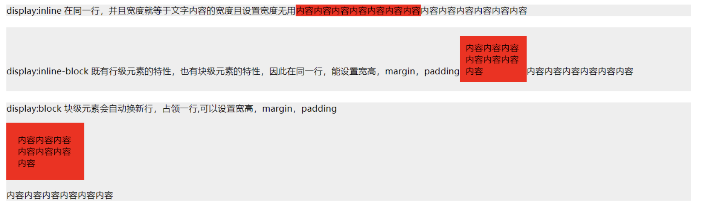
Layout Flows(layout models)
除了 Normal Flow（常规流），CSS 中还有两个主要的布局流：
Normal Flow（常规文档流）
- 元素按写入顺序自然排列。
- Block 元素垂直排列，Inline 元素水平排列。
- 不使用
float、position、display: flex/grid等特殊规则时，默认就是 normal flow。
Float Flow（浮动流）
- 使用
float: left/right后，元素会脱离常规流，但仍保留在文档中。 - 会影响其他 inline 元素的排列，但不会保留原先的位置。
- 父元素可能会“塌陷”，常见问题需要用
clearfix或overflow: hidden解决。
把一个元素“浮动”(float) 起来，会改变该元素本身和在正常布局流（normal flow）中跟随它的其他元素的行为。这一元素会浮动到左侧或右侧，并且从正常布局流 (normal flow) 中移除，这时候其他的周围内容就会在这个被设置浮动 (float) 的元素周围环绕。
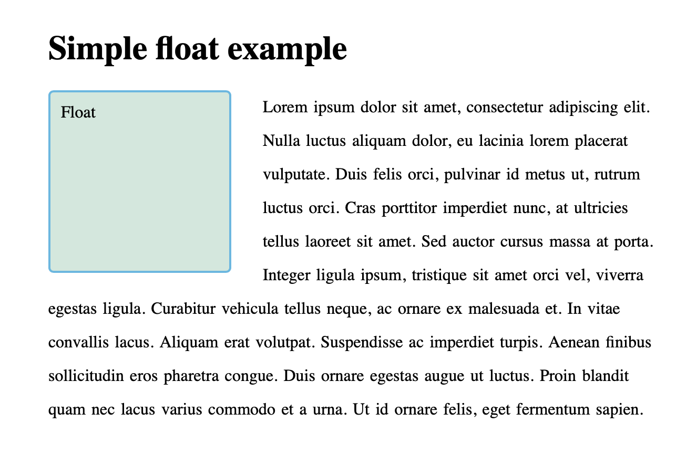
Positioned Flow（定位流）
- 指
position: absolute或fixed的元素。 - 元素完全脱离文档流，不占据空间，位置由父元素或视口决定。
- 不参与普通布局，不影响兄弟元素的位置。
Flex Flow
36. What is flex layout?
36. 什么是弹性盒子flex布局？
Answer:
Flex layout is a one-dimensional layout method.
It arranges items in a row or column.
Use display: flex on the container.
Items can grow or shrink to fill space.
It is useful for aligning and distributing space.
39. How to use display: flex to layout items?
39. 怎么使用 display\:flex 容器项目布局？
Answer:
Set display: flex on the parent container.
Use flex-direction to choose row or column.
Use justify-content to align items horizontally.
Use align-items to align items vertically.
Use flex on children to make them flexible.
- 由
display: flex激活。 - 元素在主轴（row/column）上排列，可自动伸缩对齐。
Flexbox 是 CSS 弹性盒子布局模块（Flexible Box Layout Module）的缩写，它被专门设计出来用于创建横向或是纵向的一维页面布局。
flex布局的四大概念：
- 容器：如果在一个盒子上面，设置display:flex，那么这个盒子就是一个容器
- 项目：容器的直接子元素，叫项目
- 主轴：在容器中，项目默认是按主轴方向排列，默认是从左向右排列
- 交叉轴：与主轴垂直的那个轴
容器相关属性:
flex-direction：改变主轴方向
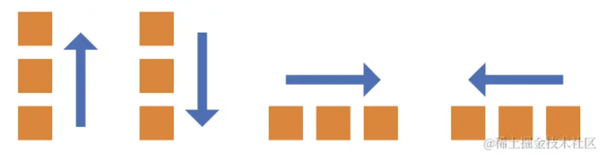
justify-content属性：定义了项目在主轴上的对齐方式。
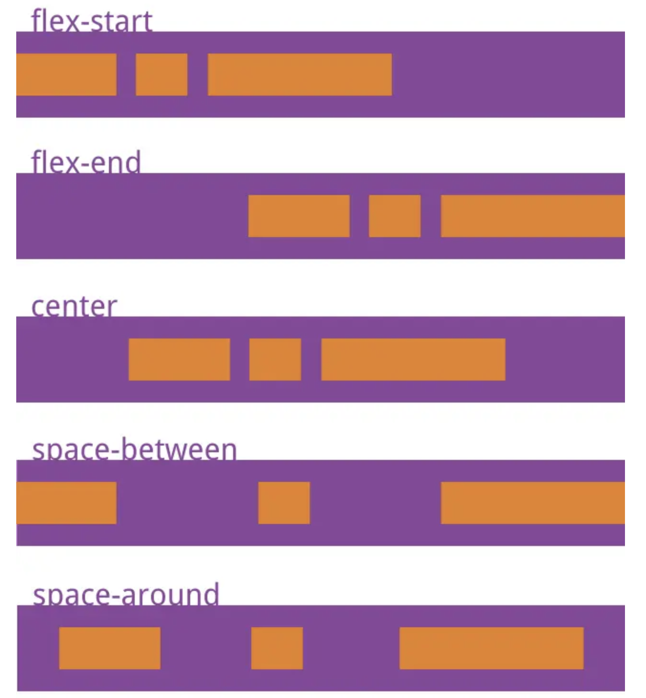
align-items属性：定义项目在交叉轴上如何对齐
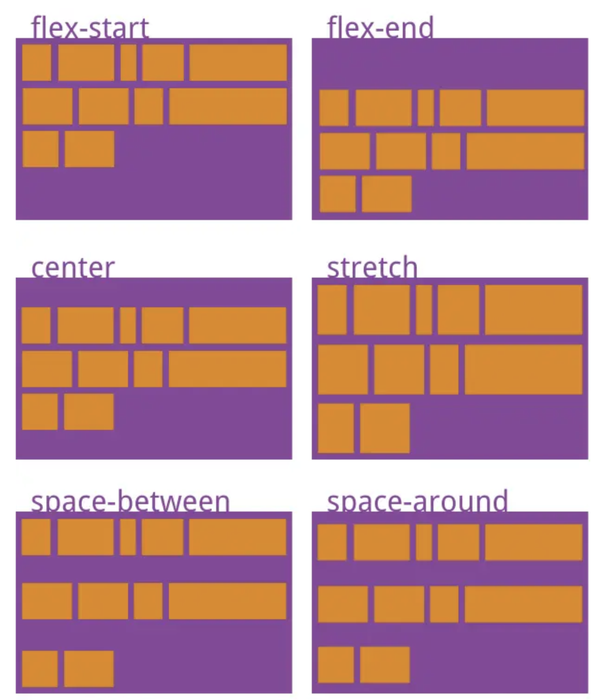
Grid Flow
- 由
display: grid激活。 - 元素按网格区域对齐，控制精细，适用于复杂布局。
Flexbox 用于设计横向或纵向的布局，而 Grid 布局则被设计用于同时在两个维度上把元素按行和列排列整齐。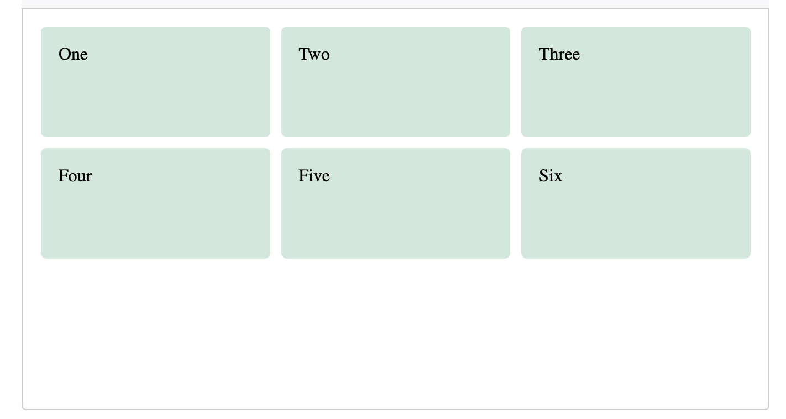
总结
| 名称 | 是否脱离常规流 | 控制维度 | 场景 |
|---|---|---|---|
| Normal Flow | 否 | 基本布局 | 默认文档结构 |
| Float Flow | 是 | 横向（水平浮动） | 文本环绕、图文混排 |
| Position Flow | 是 | 定位坐标 | 弹窗、覆盖、徽标等 |
| Flex Flow | 是 | 一维（行/列） | 响应式布局、居中 |
| Grid Flow | 是 | 二维（行+列） | 复杂面板、仪表盘布局等 |
CSS position differences
0. 供下文测试的基础页面和样式
<h1>Positioning</h1> |
body { |
1. position: static (default)
这是默认的,
静态定位（Static positioning）是每个元素默认的属性——它表示“将元素放在文档布局流的默认位置——没有什么特殊的地方”。
- Element is positioned according to the normal document flow.
- Top/left/right/bottom have no effect.
.element { |
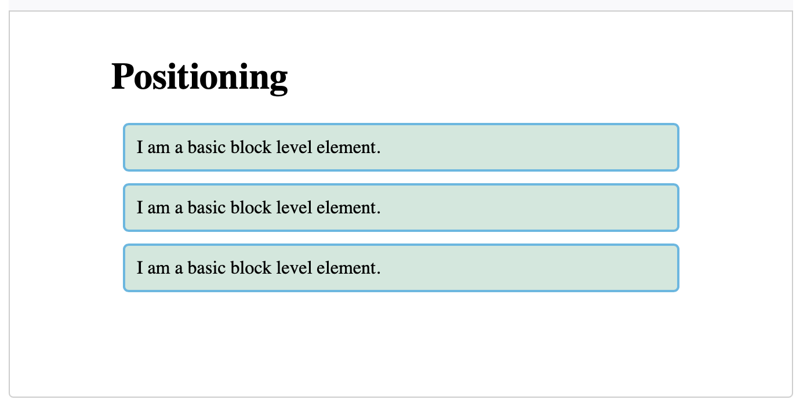
2. position: relative
相对定位（Relative positioning）允许我们相对于元素在正常的文档流中的位置移动它——包括将两个元素叠放在页面上。这对于微调和精准设计（design pinpointing）非常有用。
- Positioned relative to its original position.
- Still occupies space in the normal flow.
- Can be nudged using
top/right/bottom/left.
.positioned { |
这里我们给中间段落的position 一个 relative值——这属性本身不做任何事情，所以我们还添加了top和left属性。这些可以将受影响的元素向下向右移——这可能看起来和你所期待的相反，但你需要把它看成是左边和顶部的元素被“推开”一定距离，这就导致了它的向下向右移动。
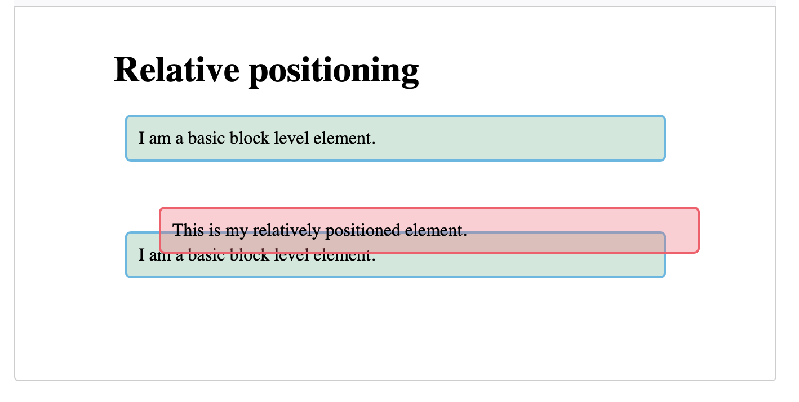
3. position: absolute
绝对定位（Absolute positioning）将元素完全从页面的正常布局流（normal layout flow）中移出，类似将它单独放在一个图层中。我们可以将元素相对于页面的 元素边缘固定，或者相对于该元素的最近被定位祖先元素（nearest positioned ancestor element）。绝对定位在创建复杂布局效果时非常有用，例如通过标签显示和隐藏的内容面板或者通过按钮控制滑动到屏幕中的信息面板。
- Positioned relative to the nearest positioned ancestor (i.e., an ancestor with
relative,absolute, orfixed). - If no such ancestor exists, it’s relative to the viewport (document body).
- Removed from document flow, so it doesn’t take up space.
.positioned { |
这和之前截然不同！定位元素现在已经与页面布局的其余部分完全分离，并位于页面的顶部。其他两段现在靠在一起，好像之前那个中间段落不存在一样。top和left属性对绝对位置元素的影响不同于相对位置元素。在这一案例当中，他们没有指定元素相对于原始位置的移动程度。相反，在这一案例当中，它们指定元素应该从页面边界的顶部和左边的距离 (确切地说，是 元素的距离)。我们也可以修改作为容器的那个元素（在这里是元素），要了解这方面的知识，参见关于定位 (positioning)的课程
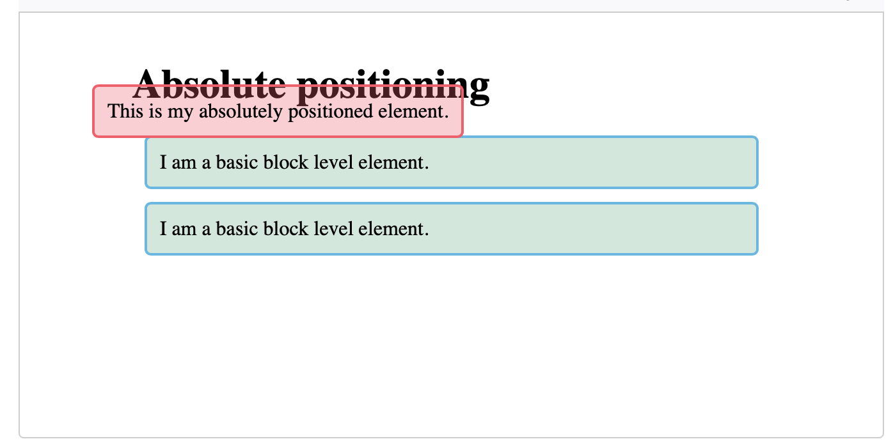
4. position: fixed
固定定位（Fixed positioning）与绝对定位非常类似，但是它是将一个元素相对浏览器视口固定，而不是相对另外一个元素。这在创建类似在整个页面滚动过程中总是处于屏幕的某个位置的导航菜单时非常有用。
- Positioned relative to the viewport (browser window).
- Doesn’t move when the page scrolls.
- Always detached from document flow.
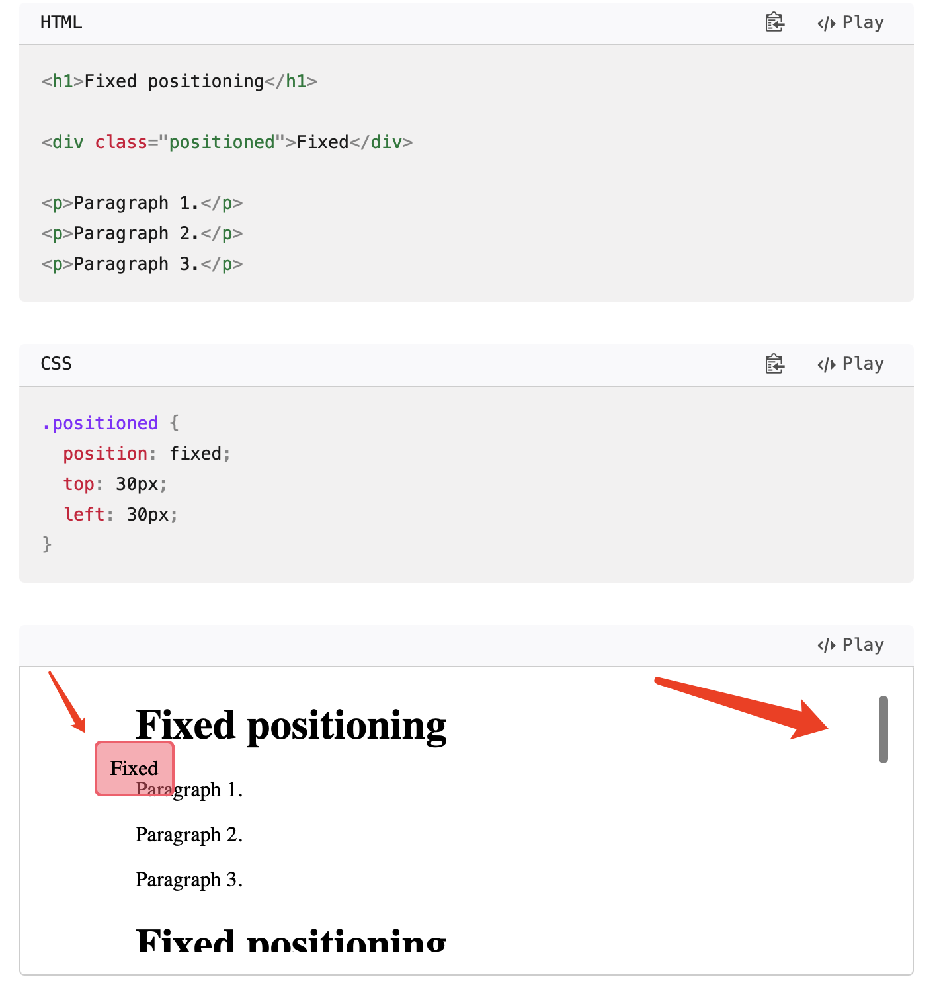
5. position: sticky
粘性定位（Sticky positioning）是一种新的定位方式，它会让元素先保持和 position: static 一样的定位，当它的相对视口位置（offset from the viewport）达到某一个预设值时，它就会像 position: fixed 一样定位。
滚动前:
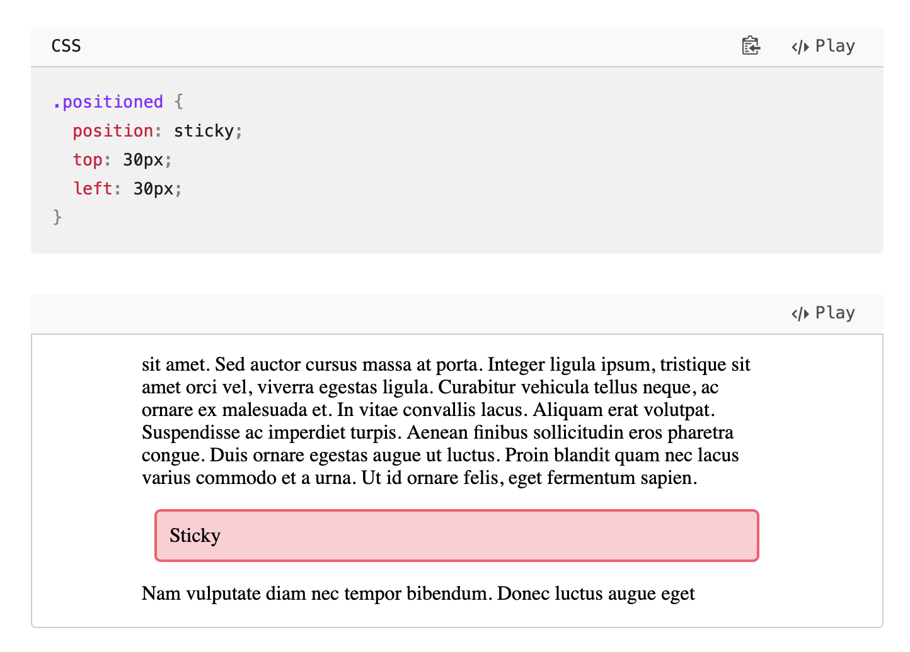
滚动后:
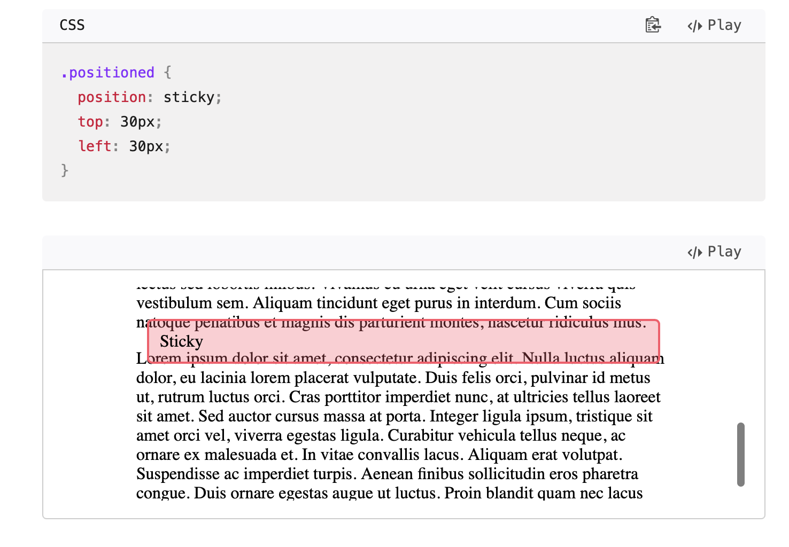
Summary Table
| Position | Relative to | Keeps space in flow? | Scrolls with page? |
|---|---|---|---|
| static | Normal flow | Yes | Yes |
| relative | Itself | Yes | Yes |
| absolute | Nearest positioned parent | ❌ No | Yes |
| fixed | Viewport | ❌ No | ❌ No |
| sticky | Nearest positioned parent | Mix | Mix |
Let me know if you want visual examples or use-case patterns for these.
How to center horizontally in CSS
To center elements horizontally in CSS, the method depends on the type of element and context. Here are the most common and practical techniques:
1. For Block Elements (e.g., <div>)
####ethod: margin: auto
.center-block { |
This works only if:
- The element has a defined width
- The element is block-level
2. For Inline or Inline-Block Elements
####ethod: text-align: center on parent
.parent { |
3. Using Flexbox (Modern, Recommended)
.parent { |
- Works with any element (block or inline)
- No need to set width
- Very reliable and widely supported
4. Using Grid (also modern)
.parent { |
Or just horizontal:
.parent { |
Summary
| Technique | Use Case |
|---|---|
margin: auto |
Block element with defined width, auto说明:左右自动分配 |
text-align: center |
Inline or inline-block inside parent |
display: flexbox with justify-content: center. |
Any element, responsive and flexible |
display: grid with justify-content: center; |
Centering both axes or just horizontally |
How to center vertically in CSS
Vertical centering in CSS depends on context, just like horizontal centering. Below are the most practical, modern ways to vertically center an element.
1. Flexbox (Recommended)
.parent { |
Optionally add justify-content: center for horizontal centering too.
2. Grid
.parent { |
Or just vertical centering:
.parent { |
3. Position + Transform
.child { |
Works well for fixed-height elements inside relatively positioned parents.
4. Line-Height Method (Text only)
.container { |
⚠️ Only works for single-line text, not for block elements.
Summary Table
| Method | Works With | Requires Parent Height | Recommended |
|---|---|---|---|
| Flexbox | Any element | Yes | Yes |
| Grid | Any element | Yes | Yes |
| Position + Transform | Fixed-size elements | Yes | Yes |
| Line-height | Text only (1 line) | Yes | ❌ No |
BFC-Block Formatting Context
- What is BFC? How to trigger it? What are its features? How to solve margin collapse?
- BFC stands for Block Formatting Context.
- It is a separate layout environment.
- It can be triggered by
overflow: hidden,display: flow-root,float, orposition: absolute. - It prevents margin collapse between parent and child.
- It prevents elements from overlapping with floated siblings.
- To fix margin collapse, wrap the element in a BFC container.
BFC（Block Formatting Context）是 CSS 中的一个布局概念，用于管理盒模型中的元素如何在文档流中排列。掌握 BFC 是解决浮动、清除浮动、margin 重叠（collapse）等问题的关键。
What is BFC (Block Formatting Context)
BFC 是一个独立的渲染区域，里面的元素不会影响到外部布局，反之亦然。它是一个隔离作用域，用于控制元素的排布和行为。
How to Trigger BFC
触发 BFC 的常见方式：
overflow: hidden; 推荐方式display: flow-root; 最标准和推荐的方式float: left/right;position: absolute/fixed;display: inline-block;display: table-cell;display: table-caption;
Features of BFC
- 内部的 Box 不会影响外部布局（如浮动元素）
- 清除内部浮动不影响父元素高度
- 阻止 margin 合并（margin collapse）
- BFC 区域不会与浮动元素重叠
解决父元素不包住子元素浮动的问题
<section> |
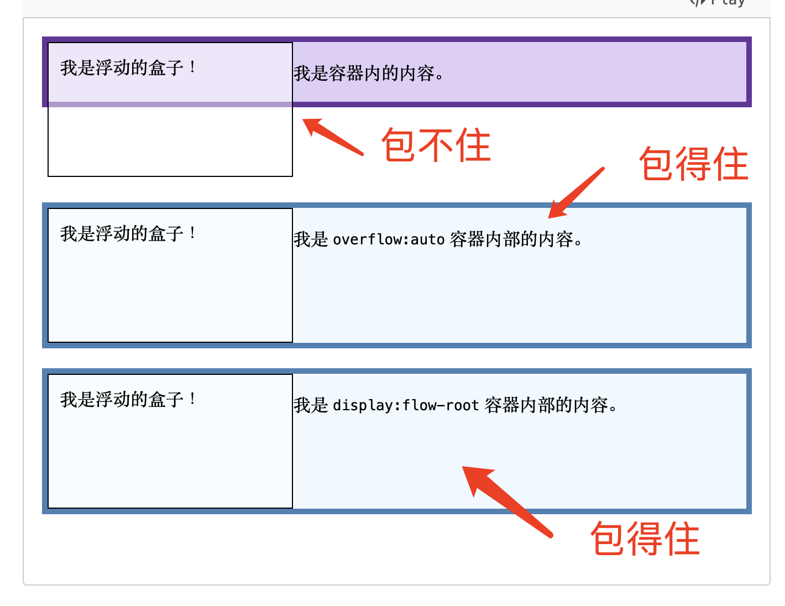
Margin Collapse 问题与解决
现象：
<div class="blue"></div> |
.blue, |
在这个示例中我们有两个相邻的 <div> 元素，每个元素在垂直方向上含有 10px 的外边距。由于外边距重叠作用，垂直方向上它们之间将具有 10 像素的间距，而不是所期望的 20 像素。
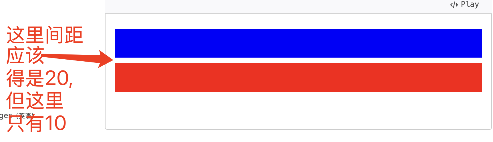
解决方法（触发 BFC 即可）：
在这个示例中，我们将第二个 <div> 包裹在另外一个class为outer的 <div> 之中并且设置outer的overflow: hidden;，以创建一个新的 BFC，防止外边距重叠。
<div class="blue"></div> |
.outer { |
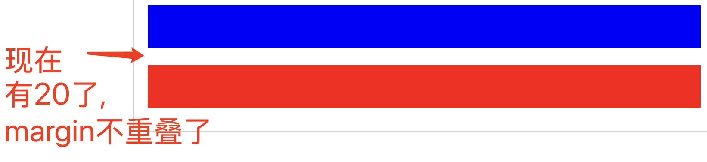
实际应用场景
| 问题 | 用 BFC 解决方法 |
|---|---|
| 父元素不包住子元素浮动 | 给父元素触发 BFC |
| 垂直方向 margin 重叠 | 给任一元素触发 BFC |
| 避免 float 元素和其他内容重叠 | BFC 会自动包裹 float 元素 |
HTML5 new features
Here are the key new features introduced in HTML5 that significantly improve functionality, semantics, and multimedia support:
Semantic Elements
Provide better structure and meaning to documents:
<header>,<footer>,<section>,<article>,<nav>,<main>,<aside>
Multimedia Tags
Built-in support for audio and video without plugins:
<audio>: Embed audio files<video>: Embed video content
<video controls> |
Form Enhancements
New input types and attributes:
- Input types:
email,date,url,number,range,color - Attributes:
required,placeholder,pattern,autofocus
Canvas and SVG
For dynamic, scriptable rendering of 2D shapes and graphics:
<canvas>: Procedural drawing via JavaScript<svg>: XML-based vector graphics
Local Storage & Session Storage
Client-side storage for structured data:
localStorage: Persistent across sessionssessionStorage: Cleared when session ends
Geolocation API
Allows the browser to get the user’s location (with permission).
navigator.geolocation.getCurrentPosition(position => { |
Web Workers
Run JavaScript in background threads, improving performance for heavy tasks.
web worker 和 service worker是一个东西吗? 怎么注册?
本文讲解:web worker vs service worker
Web Worker 和 Service Worker 不是同一个东西，它们有不同的用途、生命周期和作用范围
- Web Worker: 处理耗时计算任务，防止主线程卡顿
- Service Worker: 用于缓存、离线支持、拦截网络请求等
Drag and Drop API
Native support for draggable UI elements.
<div id="drag" draggable="true">Drag me</div> |
Browser
9. What are the advantages of the browser’s multi-process architecture?
The browser’s multi-process architecture improves stability, security, and performance.
- stability: Each tab runs in a separate process, so if one tab crashes, others remain unaffected.
- security: It also enhances security by isolating tabs, preventing malicious code from affecting other parts of the browser.
- performance: Additionally, multi-process architecture allows better utilization of multiple CPU cores, improving performance.
12. How can multiple tabs in the browser communicate with each other?
Multiple tabs in the browser can communicate using localStorage, sessionStorage, or the BroadcastChannel API.
localStorageandsessionStorageallow sharing data between tabs by using the same domain.- The
BroadcastChannelAPI enables real-time communication by sending messages between tabs or windows on the same origin. Additionally,window.postMessagecan be used for cross-origin communication.- Rare in typical web apps
- Same-origin only.
- Not supported in all browsers (notably, no support in IE; Safari support is limited).
const channel = new BroadcastChannel('my_channel');
channel.onmessage = (e) => {
console.log('Received:', e.data);
};
channel.postMessage('Hello other tabs!');
What is reflow and repaint in browsers? How can you minimize them?
- Reflow is the process where the browser recalculates the layout of elements when changes occur.
- Repaint happens when the appearance of elements changes, like color changes, but no layout change.
- To minimize them, avoid layout-changing operations like changing the size, position, or adding/removing elements frequently. Use
visibility: hiddenoropacityfor visual changes instead of modifying dimensions.
What is the browser rendering process?
- The browser rendering process begins by parsing the HTML to create the DOM tree.
- Then, the CSS is parsed and combined with the DOM to form the render tree. The render tree represents the visual elements of the page.
- The layout phase follows, calculating the position and size of elements.
- Then, painting happens, where the visual parts are drawn.
- Finally, compositing combines layers to display the final page.
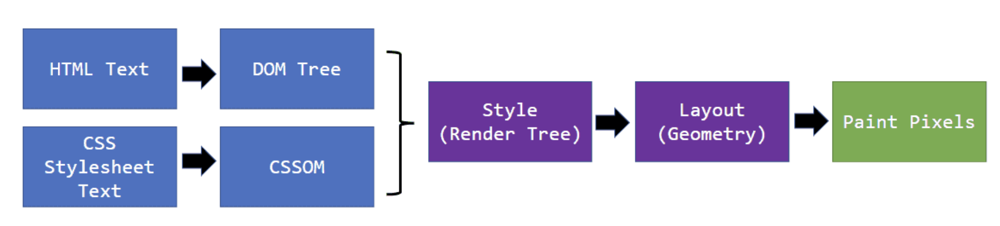
What are the differences between the DOM tree and the render tree?
- DOM树和渲染树的区别
- The DOM tree represents the structure of the HTML document, including all elements and their relationships.
- The render tree is a visual representation of:
- the DOM + styles from CSS,
- The render tree omits non-visual elements like
display: none.
- The DOM tree is used for document structure, while the render tree is used for layout and rendering.
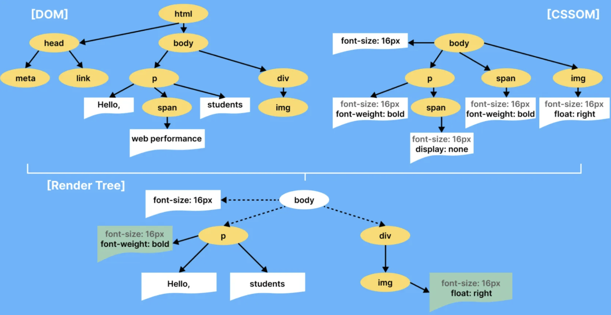
What happens from the moment you enter the URL until the page finishes loading and displaying?
- When you enter a URL, the browser sends an HTTP request to the server.
- The server processes the request and returns an HTTP response with HTML, CSS, and JavaScript files.
- The browser parses the HTML and constructs the DOM tree.
- It then processes CSS to build the render tree. JavaScript is executed, affecting the DOM and render tree.
- The browser displays the page content and resources, like images, are loaded as well. Once all resources are loaded, the page is fully rendered.
What is your understanding of the browser architecture?
谈谈你对浏览器架构的理解
A browser has several components, including
- the browser engine: The browser engine acts as the coordinator between the UI, rendering engine, JavaScript engine, and networking. It manages page navigation, user input, and process control.
- rendering engine: The rendering engine handles parsing HTML and CSS, constructing the DOM and render trees, and rendering the page.
- JavaScript engine: The JavaScript engine executes scripts, and the networking component handles HTTP requests and responses.
- networking: The networking component handles all HTTP/HTTPS requests, caching, redirects, cookies, and connection protocols like HTTP/2 or QUIC. It ensures resources are fetched efficiently and securely.
- UI: The UI is responsible for the user interface, and data storage manages cookies, local storage, etc.
- data storage: The data storage module provides APIs for local persistence, including cookies, LocalStorage, SessionStorage, IndexedDB, and Cache Storage. It supports both synchronous and asynchronous storage with origin-based access control.